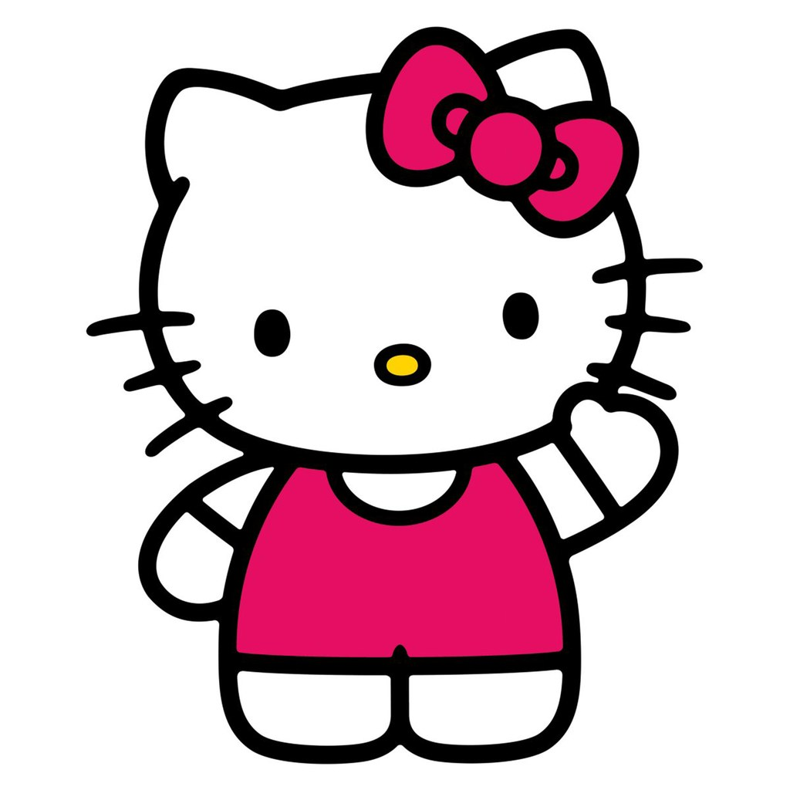
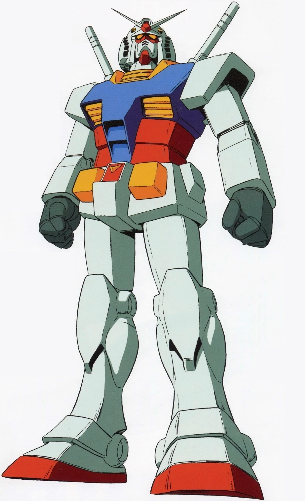
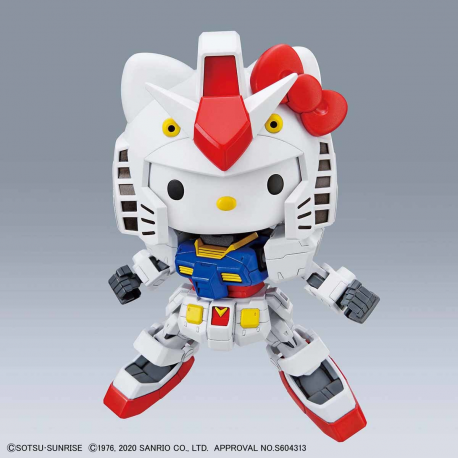

40th Anniversary of Gundam x 45th Anniversary of Hello Kitty

Gundam RX-78-2, the granddaddy of all Gundams from 1979, as conceived by Kunio Okawara
For a long time, I've wanted a model kit of my favourite Sanrio character. It my be uncharasticeristic of a guy to like Hello Kitty, but I do.
So there.